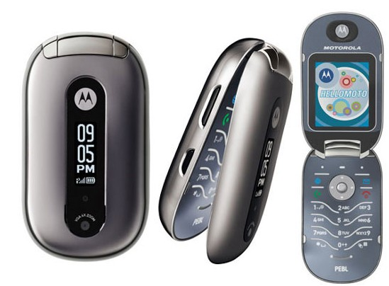

As I get older I find using the smart phone less and less attractive, I also find apps more and more superfluous and annoying; They are not intuitive, they assume you understand the latest IT fads, they have too small fonts for my eyes, as well as this most are just badly written, intrusive, lack privacy, inefficient and drain my battery so I need to keep the phone constantly charged. Yet the world keeps pushing apps to me; There is rarely an option NOT to use an app, after all who in 2026 does not have a smart phone?
Unlike 99% of the world I do not have (nor want) social media on my phone. My iPhone SE is mostly used for messaging, phone calls, the odd picture, it is not that I am a techno-phoebe, it is just that I have other far superior form-factors to do this on when I need to; Eg I also have a couple of laptops: a 11″ chromebook I use for email and writing when I travel, and a modern ThinkPad on my desk with duel 32-inch monitors which I use for stuff like CAD, programming, games, and (yes), the web and social media. I also have a Kobo for reading as I now prefer eBooks where I can make the fonts a bit bigger.

AI has now unarguably delivered on voice recognition including all languages, context and nuances. Likewise with text to voice. AI can now also interpret importance to events and, with appropriate authority, action them without me. With this in mind I for one would now be very happy to go back to a more simple time where the phone convenienced me, not everybody else.
I am very much in the minority here, and I could go on and describe the perfect format for me, indeed, I did describe several in my book; But that is just silly as we are living in a time where I do not need some third-party, or corporation to do this for me, I can now do it myself.